完整解压压缩包
不要直接在压缩软件的预览窗口里运行，也不要只拖出一个 start.bat。目录中的 public、knowledge、exam-assets、assets 等文件需要保持完整。
从题目图片、题面事实与内容规划出发，再匹配语言骨架并完成成文自检。本文档对应当前软件，不沿用旧版“模板堆叠”流程。
01 · Overview
这是一套在本机浏览器中使用的考研英语作文辅助工具：页面在本机运行，AI 与云 OCR 功能按你的配置调用相应服务。
软件不会先拿一堆模板硬拼文章。它会先确认题目、题图和任务要求，建立可核验的题面事实；再生成内容规划；随后为每个内容单元匹配合适的语言骨架；最后成文并执行字数、事实、任务覆盖、重复表达、格式与来源等自检。
47 页、378 条模板、207 个词条，用于检索、出处追溯与卷面规范。
131 条方法备注、372 条生产骨架、1103 个变体、269 个实例。
题面事实 → 内容规划 → 语言骨架 → 成文自检。
首次打开先选方向，只显示该方向要背的内容，进度可背满。
按写作顺序切成学习单元，进度存服务端，可导出打印。
写完即给出模块组装流程、缺口建议与本次用到的模板句。
拍照上传 → 校对识别 → 确认后按讲义规则分级修改，每条附依据。
背诵卡片与行文精讲均可导出，中英文可选取、可搜索。
02 · Editions
所有发行包都内置同一套功能与知识库，区别只在适用系统、是否内置 Node.js 运行时、是否包含 47 页原讲义图。每个包都同时带有 start.bat、start.command 与 start.sh 三个启动脚本，按自己的系统选一个即可（Windows 单文件版另有双击 exe 的方式）。所有发行包都需要激活码才能使用，请向发放软件给你的作者索取。
| 发行包 | 适用系统 | 约体积 | Node.js | 47 页原讲义图 | 推荐对象 |
|---|---|---|---|---|---|
| Windows 单文件版 | Windows 64 位 | 约 52 MB | 已内嵌在 exe 中，双击即用 | 不含 | Windows 用户；最省事 |
| 免安装版 | Windows 64 位 | 约 52 MB | 包内已带，解压即用 | 不含 | 大多数 Windows 用户 |
| 完整版 | Windows 64 位 | 约 141 MB | 包内已带 | 包含全部 47 页 | 需要打开原始讲义页核对 |
| 精简跨平台版 | macOS / Linux / Windows | 约 18 MB | 需自行安装 18 或更高版本 | 不含 | Mac 与 Linux 用户；或已装 Node.js 的 Windows 用户 |
03 · Quick Start
软件通过本机服务运行。请先完整解压，再从项目根目录启动（Windows 单文件版只需把 exe 与同目录文件一起解压，双击 exe）。
不要直接在压缩软件的预览窗口里运行，也不要只拖出一个 start.bat。目录中的 public、knowledge、exam-assets、assets 等文件需要保持完整。
start.bat单文件版双击 考研英语作文助手.exe 即可；免安装版与完整版双击 start.bat 会优先使用包内运行时；精简版会调用系统中的 Node.js 18+。macOS 请双击 start.command，Linux 请执行 ./start.sh。
默认地址为 127.0.0.1:7654。若没有自动打开，请手动在浏览器地址栏输入该地址。
黑色命令窗口就是本地服务。关闭它后页面会失去连接；使用结束时可在该窗口按 Ctrl + C 停止服务。单文件版双击 exe 的窗口同理。
正式发行包带激活码授权。首次启动且尚未激活时，浏览器会打开「激活」页面（此时首页与各功能页暂不可用），按下面两步完成：
激活码是发放软件时一并给你的长串字符（以 EEA1 开头）。整段复制粘贴到激活页输入框即可，码中的空格不影响识别；也可以请对方把激活码二维码对准手机，在手机上看到码后手动输入。输入错误会明确提示，不会消耗次数。
激活在本机离线完成（软件内校验签名），无需联网。成功后页面显示授权信息（是否永久 / 到期日）并自动进入首页；之后每次启动不再要求输入。
license.json，与软件目录无关——卸载软件、更换解压位置都不会丢失授权；删除该文件或换电脑后，用同一个激活码再激活一次即可（激活码不绑定电脑）。授权到期后软件回到待激活状态并给出到期提示，联系发放方续期即可。激活/验签全程离线，不向任何服务器发送激活码。
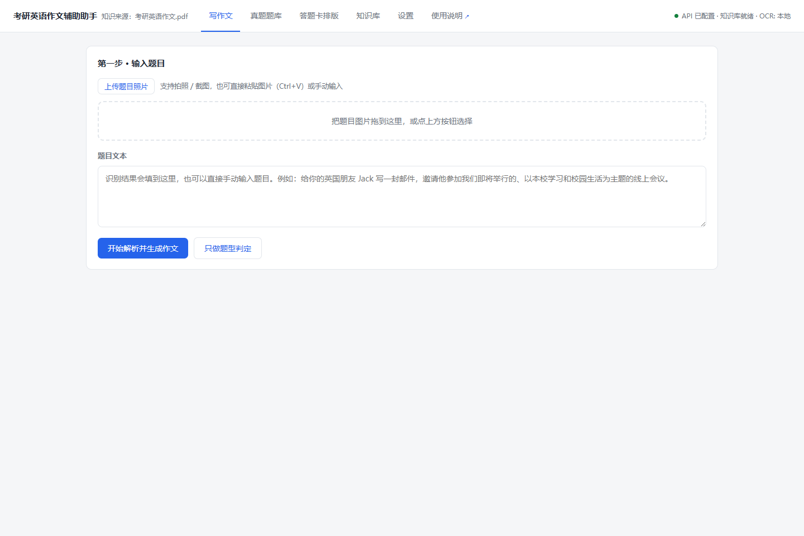
请下载跨平台版。软件主体是纯 Node.js 实现，因此绝大多数功能在 Mac 与 Linux 上与 Windows 完全一致。
| 功能 | Windows | macOS / Linux |
|---|---|---|
| 生成作文、真题题库、知识库、学习卡片、行文复盘 | 可用 | 可用，无差异 |
| 答题卡排版与 PDF / PNG 导出 | 可用 | 可用（23 个字体与背景图随包内置） |
| 背诵卡片 / 行文精讲 打印 PDF | 可用 | 可用，依赖系统中文字体（见下） |
| 拍照识题（离线 OCR） | 系统内置，免费 | 不可用，需配置云端 OCR |
| 启动方式 | start.bat | macOS 双击 start.command；Linux ./start.sh |
| Node.js | 免安装版已内置 | 需自行安装 18 或更高版本 |
nodejs.org 下载安装包，或执行 brew install node。start.command。若提示「来自身份不明的开发者」，右键点击该文件再选「打开」，或在「系统设置 → 隐私与安全性」中点「仍要打开」。127.0.0.1:7654；若没有，手动访问该地址即可。若双击无反应，可在「终端」中进入解压目录执行 chmod +x start.command 后重试；解压工具偶尔会丢失可执行权限。
sudo apt install nodejs npm。sudo apt install fonts-noto-cjk。chmod +x start.sh && ./start.sh。.otf 格式字体无法内嵌，请确保系统中存在 .ttf 或 .ttc 格式的中文字体。答题卡排版不受此限制，因为它的字体是随包内置的。
04 · Settings
进入顶部“设置”页，按需填写服务凭据。所有凭据通过本机后端保存，不写入前端页面。
判断类模型：deepseek-v4-flash
润色类模型：deepseek-v4-flash
负责题型判断、内容规划辅助、骨架选择、成文与定向修订。
默认模型：qwen3.7-plus
负责识读漫画、图画、图表、可见文字、人物动作与具体数据，并标记不确定项。
Windows 内置：离线、免费。
百度 OCR：需配置百度 API Key 与 Secret Key，复杂排版通常更稳。
qwen3.7-plus，点击“保存视觉设置”。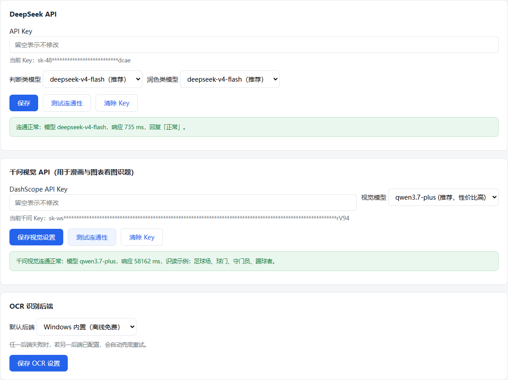
config.json 的个人工作目录直接发给别人。需要发布或分享时，应使用不含个人 Key 的发布包，或先在设置页逐项点击“清除 Key”。05 · Core Workflow
当前默认使用内容优先的 V2 成文链。语言骨架服务于内容，而不是反过来决定内容。
题目到底要求什么？图上确实有什么？哪些数值能被验证？哪些地方看不清？
三段分别承担什么功能？每个任务是否被覆盖？原因、影响、建议是否重复？
哪个句型适合表达这个内容单元？是否与题型、褒贬倾向、单图/双图、动态图/静态图冲突？
字数是否合格？图表数字有无来源？是否出现明显重复？每句能否追溯内容与语言来源？
06 · Write
“写作文”页支持图片上传、拖放、剪贴板粘贴和手动输入。图画/图表题应尽量带入原题图。
可点击“上传题目照片”，把图片拖入虚线框，直接按 Ctrl + V 粘贴截图，或在“题目文本”中手动输入。
图片会进入 OCR 与千问视觉通道。软件会展示题型、画面描述、图表数据、主题推断及交叉校验提示。请人工核对 OCR 原文和不确定项。
“只做题型判定”适合快速检查分类；“开始解析并生成作文”会运行完整的事实、规划、骨架、成文与自检链路。
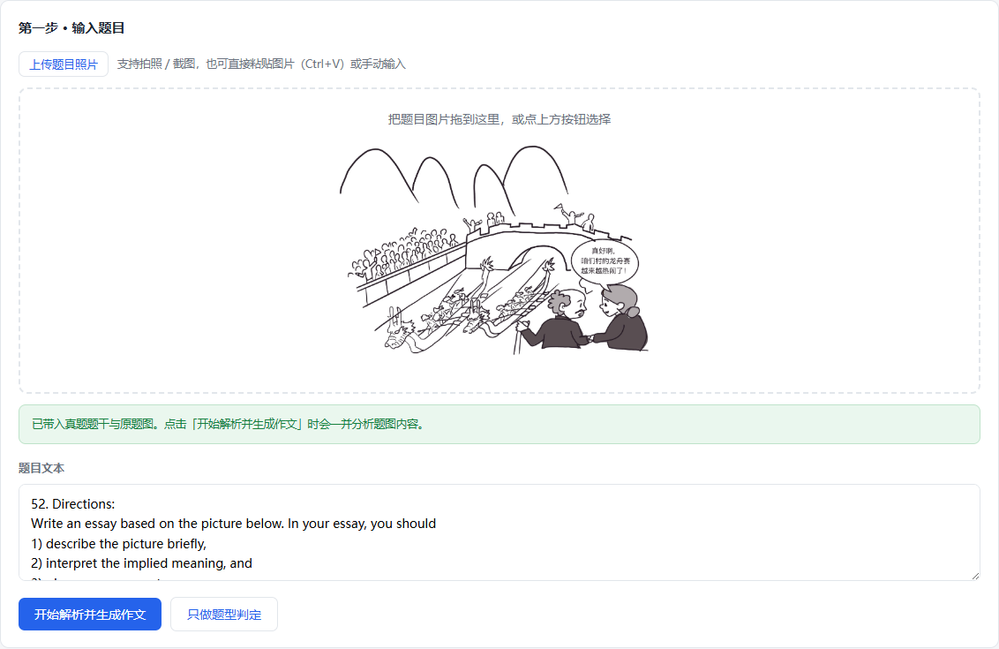
07 · Facts & Plan
这两步决定文章有没有“说对内容”。建议展开查看，而不是只跳到最终作文。
客观画面、可见人物或物件、可见动作、图中文字、题目主题以及识读不确定项。
图表类型、标题、单位、每个数据点、关键趋势或对比；未经视觉支持的数字不能写入文章。
收件对象、关系、语域、书信或通知格式，以及 Directions 中每一项必须完成的交际任务。
内容规划把全文拆成三个段落和若干“内容单元”。每个单元包含修辞功能、要表达的主张、事实证据、来源类型、预计字数、是否必写，以及用于防止同义重复的语义标识。若成文偏短，系统会优先增加新的论证维度；若偏长，则优先移除可选内容，而不是机械复制或删除关键任务。
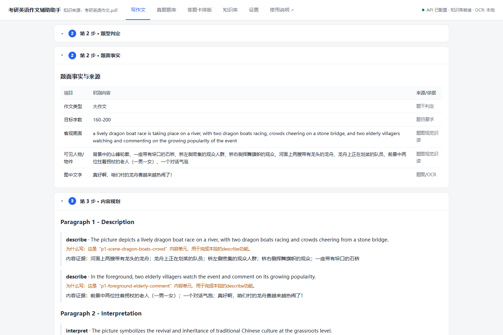
08 · Language Skeletons
语言骨架是“如何表达某个内容单元”的结构参考，不是要求原样照抄的整段模板。
系统会从 372 条可用于生产的骨架中，根据作文轨道、段落位置、修辞功能、题型、褒贬倾向、单图/双图、动态图/静态图等条件筛选候选，再为每个内容单元绑定一个合适骨架。冲突组和语义标识会阻止全文同时出现互相矛盾或功能重复的骨架。
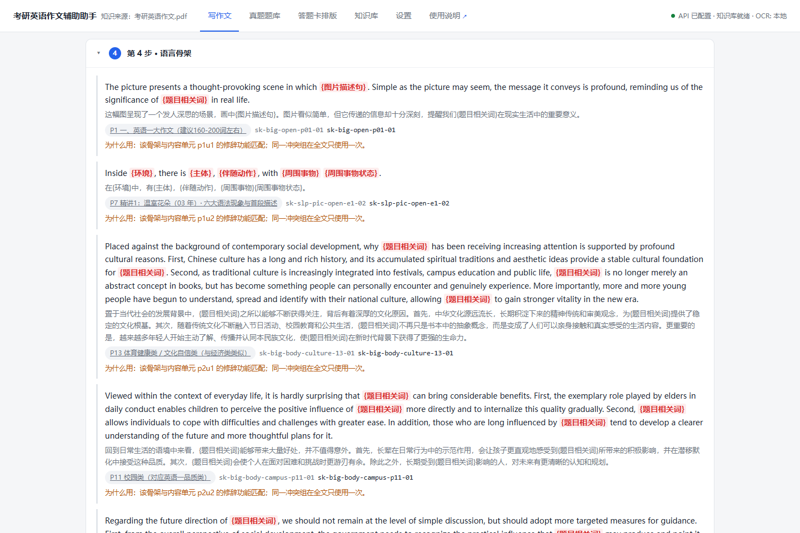
09 · Result & Sources
生成结果不是只有一篇英文。它同时包含词数、自动检查和每一句的双层来源。
说明这句话“写了什么、依据什么”：可能来自题干任务、题图可见事实、图表数据，或明确标注为分析、建议、展望等推理内容。
说明这句话“如何表达”：显示匹配的骨架、知识来源、页码或条目标识。它用于追溯表达结构，而不是替代事实依据。
在“生成结果”右上方勾选“显示逐句来源标注”，文章会按句展开。每句下方可同时看到内容单元与语言骨架信息。取消勾选即可恢复纯文章阅读。
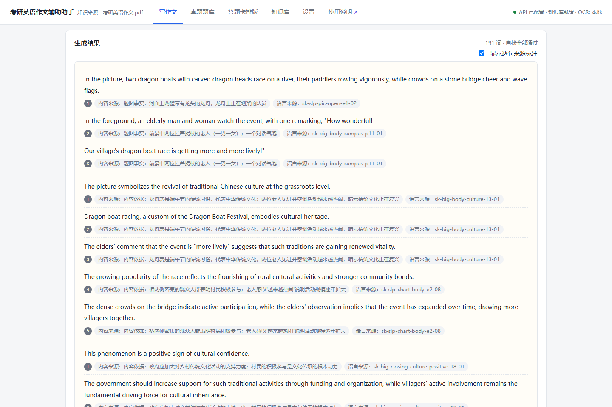
10 · Word Count
系统先读取题目中的显式字数，再按目标中点的 ±10% 计算接受区间。
| 题目要求 | 计算方式 | 系统接受区间 |
|---|---|---|
| 160–200 words | 中点 180；180 × 90%～110% | 162–198 词 |
| about 150 words | 目标 150；150 × 90%～110% | 135–165 词 |
| about 100 words | 目标 100；100 × 90%～110% | 90–110 词 |
生成时，系统还会把总字数预算分配给三个段落和各内容单元。偏短时，优先补充同一内容单元内部的具体因果、例证或影响，或增加不重复的新内容维度；偏长时，优先删除套话、重复意义、冗余例证与可选内容，并最多定向修订两轮。
11 · Essay Review
这个功能面向「你已经按这套方法论自己写完了一篇作文」的场景。软件先识别照片，交给你核对，确认后才依据讲义规则给出分级修改，并逐条说明修改依据。
拍照、截图或直接粘贴作文图片，点「开始识别」。也可以点「跳过识别，手动输入」直接把作文敲进去。
识别结果会填进可编辑文本框。请务必先核对，改成你实际写的内容。题型会自动判定并显示依据，可手动改选。点「确认文本并开始批改」后才会进入批改。
查看分档、得失分点与分级修改项，逐条采纳或忽略，生成终稿，可复制、导出报告 PDF 或直接送入答题卡排版。
第二步提供两种模式。选「对照真题批改」后，依次选择英语一 / 英语二 → 大作文 / 小作文 → 年份 → 具体题目，软件会自动带入该题的官方题干、图表原始数据与校对范文，无需你手填题型或题干。
题目下拉会标注「有范文 / 无范文」。60 道题有校对范文；其余题目仍可用官方题干校验，但不做范文对比，也不会编造范文。若你写的是自拟题目，切到「不指定真题」手选题型即可。
明显语法错误是最直接的失分点，因此单独成组并排在所有修改项最前。检查覆盖：
| 类型 | 示例 |
|---|---|
| 主谓一致 | he have → he has；Employees … has → have；they was → they were |
| 冠词 | a apple → an apple；an book → a book |
| 动词形式 | to goes → to go；should pays → should pay |
| 时态 | 出现 last year 等过去标记却全用现在时 |
| 单复数 | much people → many people；a informations → information |
| 易混词 | it's impact → its impact；there career → their career |
| 拼写 | recieve → receive；enviroment → environment |
| 大小写与标点 | 句首未大写、i 未大写、称谓后用冒号（讲义 P9）、重复词 |
an hour、a university、A number of students has applied 这类容易被机械规则误判的正确写法都做了排除。
| 等级 | 包含什么 | 能否自动替换 |
|---|---|---|
| 语法（必改） | 主谓一致、冠词、时态、词形、单复数、易混词、拼写、大小写标点 | 大多可以 |
| 必改 | 字数越界、段落数不对、小作文缺称呼或落款、通知误用个人署名、图表出现无法核验的数字、重复长短语、讲义明令禁止项 | 部分可以 |
| 建议 | 可套用的讲义功能句、可升级的讲义词表表达、骨架替换词 | 词表替换可以；含占位符的功能句需你填空 |
| 结构 | 缺少哪个写作模块、应补一句什么功能 | 不可以，需自己动笔 |
批改结果会给出四个维度的估分区间，大作文按 20 分制、小作文按 10 分制：
| 维度 | 占比 | 主要看什么 |
|---|---|---|
| 内容 | 30% | 任务是否写全、图表数字是否可核验、字数是否达标 |
| 结构 | 25% | 三段式是否完整、写作模块是否覆盖 |
| 语言 | 30% | 语法错误数量、重复表达、表达是否可升级 |
| 格式 | 15% | 称呼落款、大小写与标点 |
每项都给区间而不是确定分数，并附扣分原因，方便你看出弱在哪一项。
这是本功能的核心约束。每条修改项都会显示「修改依据」，且依据只能来自以下五类，不存在模型自由发挥：
没有可追溯依据的条目不会出现在结果里。这一约束有自动化回归保障（scripts/verify-essay-review.mjs）。
每条修改项都以「原文（删除线）→ 改为（高亮）」呈现。采纳后，页面底部会列出实际替换了哪些内容，并给出完整终稿。含占位符的讲义功能句不会被直接写进终稿——否则终稿里会残留 {题目相关词}；这类条目会归入「需要你自己动笔」清单，并把模板一并显示出来。
手写作文默认走视觉模型转写，而不是本地 OCR。原因是实测下来两者差距很大：
| 识别通道 | 结果 |
|---|---|
| Windows 内置 OCR | 可辨认字符仅 35%，输出 D 巴 ' 乙 夕 这类乱码 |
| 视觉模型（千问） | 完整转写，96 词，无法辨认 0 处，并自动纠正了旋转 |
[?]，不会猜测填词。12 · Exam Bank
当前题库收录 74 道真题、37 张题图、60 篇参考范文，支持筛选、查看详情和直接带入练习。
可按科目、年份、大小作文、作文类型、是否有范文筛选，也可用关键词搜索题干、主题和标签。点击“随机一题”可从当前结果中抽取题目。
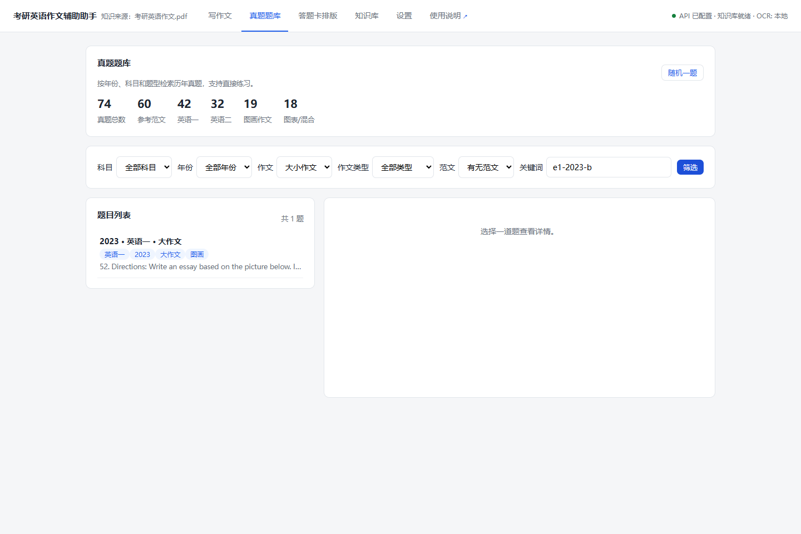
详情页可查看题目要求、补充题干、写作任务、原题图、默认折叠的参考范文和来源信息。常用操作包括：
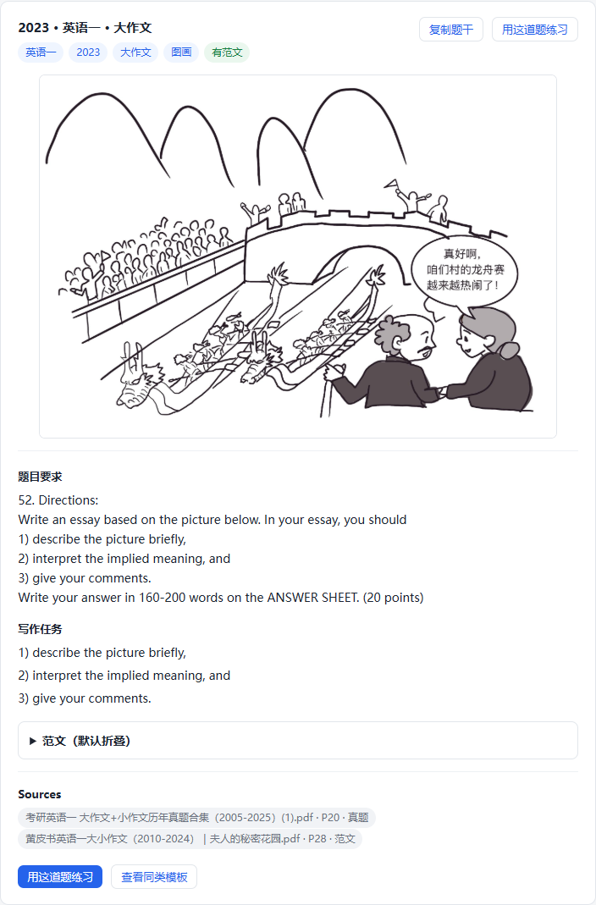
13 · Knowledge Base
知识库适合检索、背诵、理解来源和主动组句。它与自动成文链互补，但不是自动成文的旧式拼接入口。共有五个子页面：模板字典、学习卡片、行文解析（真题范文精讲）、模块组装与组装演练。写完作文后的复盘则直接出现在「写作文」页。
首次打开软件会让你先选择备考方向，之后可在「设置 → 备考方向」随时切换。选定后知识库只显示你需要背的内容，进度条也能真正背满，而不是永远停在一个填不满的大池子里。
划分依据是讲义来源与真题实际考查情况，共分三类：
| 备考方向 | 主线（计入进度） | 拓展（默认不计入） | 可背总量 |
|---|---|---|---|
| 英语一 | 图画大作文 + 小作文，295 条 | 图表 5 条 | 300 条 |
| 英语二 | 图表大作文 + 小作文，273 条 | 无 | 273 条 |
为什么英语一仍保留图表模板：英语一 2024 年考过图画与图表的混合题、2025 年考过图表题，所以图表模板不会被隐藏，而是作为「拓展题型」保留。它默认不计入进度，勾选卡片页的「纳入拓展题型」即可一并背诵。英语二从未考查图画大作文，因此完全不显示图画模板。
两个方向的背诵进度分别保存：切换方向时，两边已标记的状态都不会丢失，各自都能背到 100%。
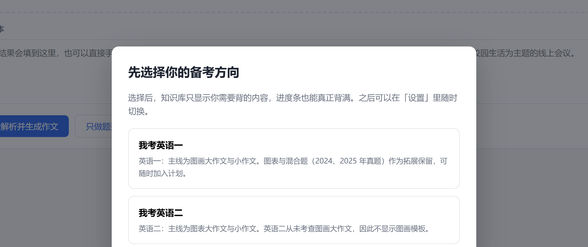
「学习卡片」把当前方向需要背的功能句骨架，按轨道顺序与每条轨道内部的模块顺序线性铺开，再按你设定的每日数量切成学习单元。背诵顺序因此等于实际写作顺序，不会出现先背结尾句、后背开头句的情况。每张卡片都标注它属于英语一专属、英语二专属还是通用。
进度存在哪里：学习进度保存在软件目录下的 knowledge/study-progress.json，属于服务端文件。因此换浏览器、清浏览器缓存都不会丢；同一局域网内访问同一个服务也能看到同一份进度。想从头开始可点「重置进度」，该操作不可撤销。
调整每日数量或轨道范围时，已经标记过的卡片状态会被保留，不会因为改计划而清零。
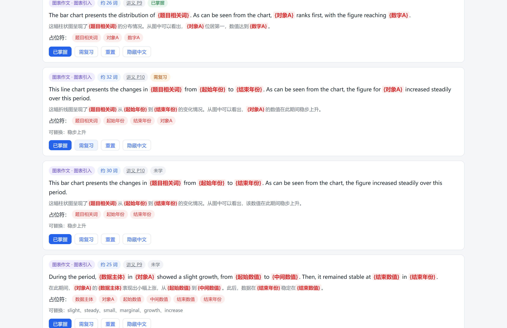
行文解析属于「写完之后」的复盘环节，因此它直接出现在「写作文」页的生成结果下方，不需要你再去题库另选题目。
行文复盘以模块组装的视角呈现这篇作文：
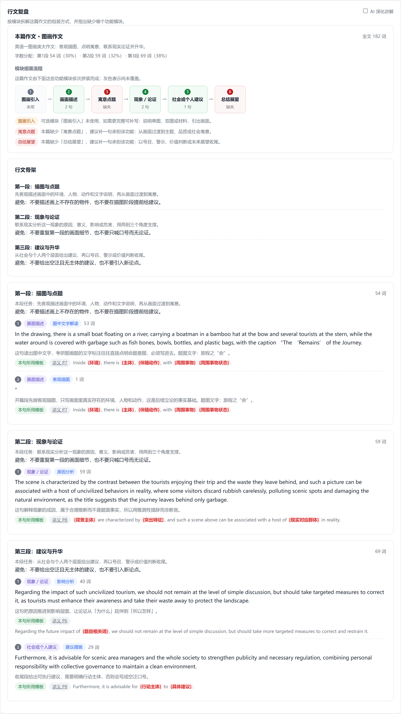
本次用到的模板句会把这篇作文真正套用过的模板逐条列出，可以单条标记「已掌握 / 需复习」，也可以一键「全部标记已掌握」。标记结果直接写入同一份学习进度，知识库「学习卡片」页的进度条会同步更新——写一篇作文就等于顺手复习了这几张卡片。
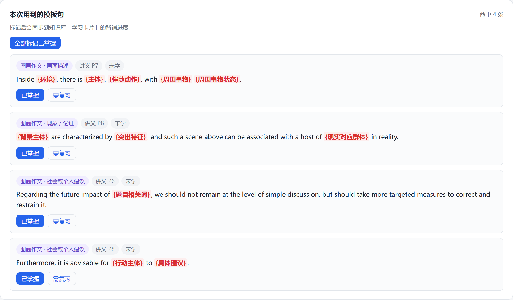
知识库的「行文解析」子页面用于对照学习已校对的真题范文，针对 60 道有范文的真题逐句说明功能、位置理由与对应讲义页码。解析默认完全离线生成，只使用题库范文、题面事实与讲义骨架，不联网也能用。
在「真题题库」页打开任意题目后，点「看行文解析」可直接跳转到该题的解析。若该题暂无已校对范文（共 14 道），软件会明确提示，并只提供题型结构解析，不会凭空编造范文。
学习卡片与行文解析都可以导出为 A4 打印稿，中文与英文都能正常显示、选取和搜索。
PDF 由软件自行排版生成，无需安装任何字体或额外软件。中文取系统楷体（缺失时依次回退黑体、雅黑、宋体），英文使用 Times New Roman，并只把实际用到的字形嵌入文件，因此体积很小。
可按关键词、分类和小作文题型检索。条目会显示英文、中文、模块、来源、页码、条目标识、讲义提醒及示例。红色 {占位符} 表示必须替换的题目相关词；蓝色 [次级占位符] 表示可按语境优化的表达。
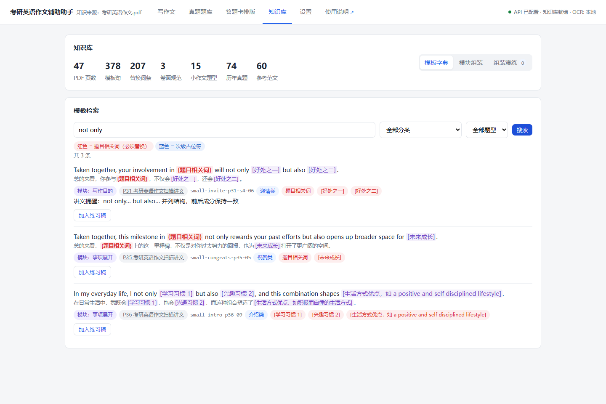
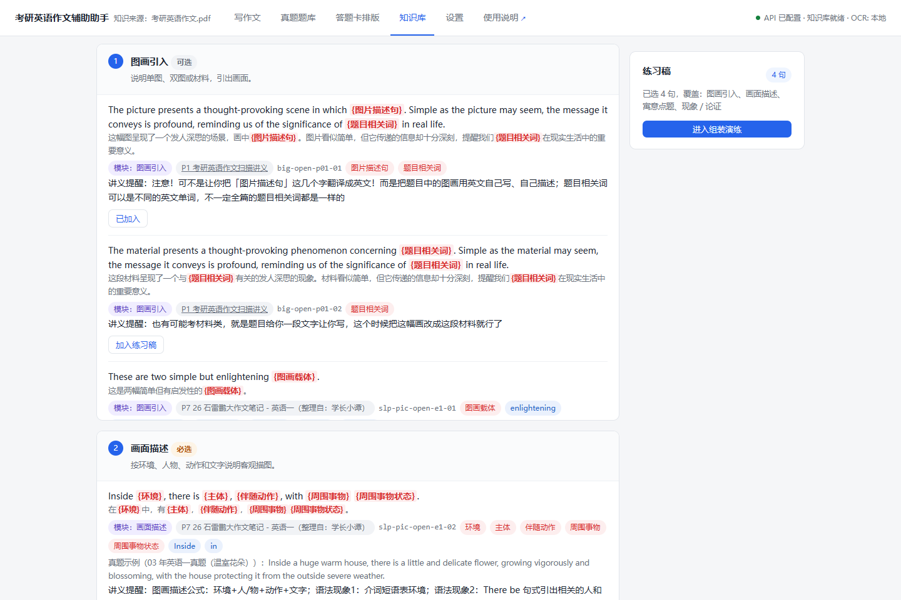
进入“组装演练”后，可以上移、下移、替换或删除句子，填写占位符，并在右侧查看实时预览和词数。系统会提示未填占位符与缺失的必选模块。练习稿只保存在当前浏览器会话中，关闭会话后不保证保留。
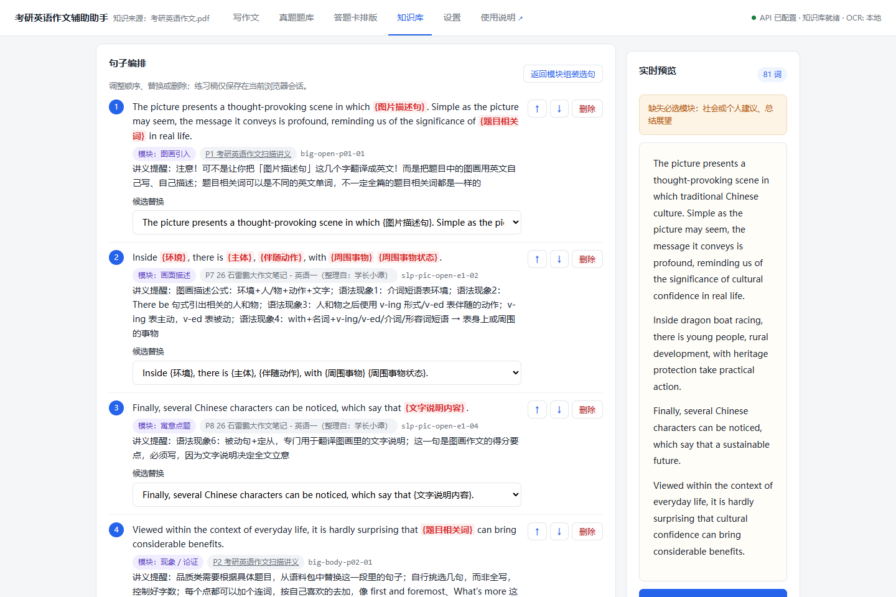
14 · Real Answer Sheet
把作文直接叠加到原版考研英语写作答题卡区域。边框、上下警示语、Section 标题、题号、横线和整体比例全部保留，并可导出单页 A4 PDF 或高清 PNG。
可选英语一/英语二的 Part A、Part B。英语一每栏 24 行，英语二每栏 23 行，均包含题号所在首行。
完整内置 Dome 的 21 个 TTF 字体，并保留 Ink Free、Segoe Script；默认推荐“舒窈英文衡水体”，可直接查看字体试写。
“模拟考场”一键恢复黑字 17pt；“红字字帖”一键切换红字 18pt。两种模式都可继续微调字号、倾斜与基线。
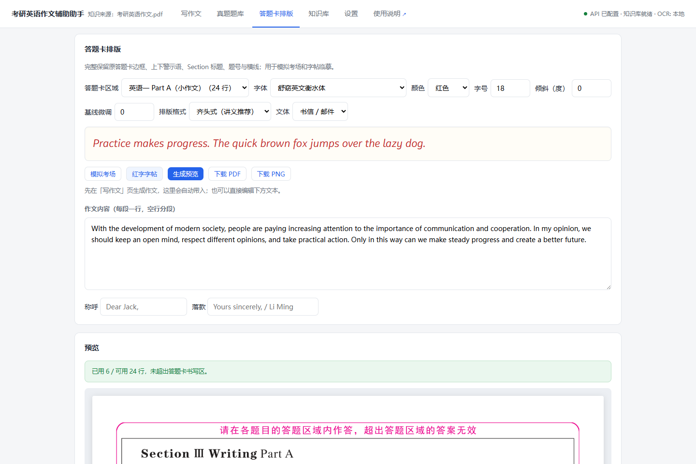
15 · Quick Checklist
每次练习按下面顺序快速检查，可显著减少“识图错、任务漏、字数偏、格式错”。
16 · Privacy
软件界面和知识库在本机运行，但启用 AI 或云 OCR 时，相应数据会发送给你选择的服务商。
| 功能 / 服务 | 会处理或发送的数据 | 不会主动发送的内容 |
|---|---|---|
| Windows 本地 OCR | 题目图片在本机 Windows OCR 引擎中识别。 | 不会因 OCR 本身把图片发送到百度。 |
| 千问视觉 | 上传或粘贴的题目图片，以及“请识读题图”的指令，会发送给千问 / 百炼视觉接口。 | 不会主动上传整个项目目录或整份知识库。 |
| DeepSeek | 题目文本、结构化题面事实、内容规划请求、候选语言骨架与绑定上下文、当前草稿及定向修订要求等，会按生成步骤发送给 DeepSeek。 | 不会主动上传本机其他文件或整份原讲义图片。 |
| 百度 OCR | 当选择云端 OCR 时，题目图片会发送给百度 OCR；鉴权时使用已配置的百度凭据。 | 不会因百度 OCR 自动发送你的作文知识库。 |
| 激活 / 授权 | 激活码只在本机校验（离线验签），不向任何服务器发送；授权状态写入本机用户目录的 license.json。 | 不会上传激活码、不联网校验、不读取本机硬件信息。 |
通过设置页保存的配置写入项目根目录的 config.json。前端读取配置状态时只获得掩码，不会返回 Key 明文。正式发布包不应包含任何个人 Key。
config.json 上传到网盘、论坛或代码仓库17 · FAQ
以下问题覆盖激活、启动、缓存、鉴权、视觉识读、字数、自检与完整版原页。
先关闭重复启动的命令窗口或已运行的软件实例，再重新双击 start.bat。如果确实需要改端口，可修改 config.json 中的 server.port，然后用新端口访问本机地址。不要同时启动多个占用同一端口的实例。
先按 Ctrl + F5 强制刷新，跳过浏览器缓存。仍异常时，确认命令窗口运行的是当前解压目录，并检查是否把新旧版本文件混在同一文件夹中。
401 通常表示 Key 无效、已撤销、复制时多了空格，或配置的账号无权使用当前接口。回到“设置”重新填写并保存，再点“测试连通性”。若 Key 曾泄露，先在平台撤销旧 Key，再使用新 Key。
请单独点击千问区域的“测试连通性”。该测试会实际读取一张内置真题题图，可同时验证 Key、模型、网络和账户权限。默认模型是 qwen3.7-plus。如果测试失败，不要只反复保存；应根据返回信息检查凭据、余额、区域权限或模型可用性。
先把图片裁正、提高对比度、去掉大面积空白，或直接使用屏幕截图。Windows OCR 适合清晰中英文文字且完全离线；复杂排版可切换百度 OCR。无论使用哪种 OCR，都要在提交生成前人工核对题目文本、数字和单位。
Directions 只说明“根据下图写作”，并没有提供图中人物、动作或图表数字。当前软件禁止根据历年真题记忆猜画面。请上传题图，或从真题题库点击“用这道题练习”带入原图。对于题库内已有校对资料的题目，后端可在特定条件下使用离线事实摘要兜底。
系统把 160–200 的中点 180 作为目标，再按 ±10% 计算接受区间，因此是 162–198。类似地，about 150 对应 135–165，about 100 对应 90–110。这是软件当前的生成与自检规则。
先查看具体失败项。字数、任务覆盖、视觉事实、图表数字和小作文格式属于高优先级问题，应修正后再使用；重复表达或个别来源展示异常也需要人工复核。软件可能自动扩写、收缩或定向修订，但最终决定仍应由你根据题目检查。
47 页原讲义图只包含在完整版。精简版和免安装版仍保留结构化来源信息，但不包含原扫描图片，因此点击原页可能无法打开。需要逐页核对时，请使用完整版。
只要启动时的命令窗口仍然开启，本机服务通常仍在运行，重新访问 127.0.0.1:7654 即可。要完全停止，请回到命令窗口按 Ctrl + C 或关闭该窗口。
组装练习稿保存在当前浏览器会话中，设计目标是临时练习，不是长期文档存储。重要内容请及时点击“复制纯文本”，保存到自己的笔记或文档。
先点击“生成预览”，确认页面出现完整答题卡且行数状态正常，再下载 PDF 或 PNG。若浏览器拦截下载，请允许该本机页面下载文件。23 个字体都已内置，无需在 Windows 中安装；若某次下载中断，可刷新页面后用默认“舒窈英文衡水体”重新生成。若提示溢出，请先缩小字号或精简内容。
激活码是以 EEA1 开头的一长串字符，由软件发放方（作者）为你的授权生成，内含有效期限。正式发行包首次使用必须激活；向发放软件的作者购买或索取即可。激活全程离线、不绑定电脑，同一码在任意一台电脑上都能激活。
license.json 后需要重新激活吗？需要，但只是把同一个激活码重新输入一次，秒级完成，不消耗次数也不联网。授权状态文件保存在本机用户目录，不在软件文件夹内，因此删除软件不影响已激活状态；只有当该文件丢失或换到新电脑时，才需要再次输入激活码。已过期的码无法再次激活，需联系发放方续期。
先确认没有复制漏字符或混入空格以外的符号（码中的空格不影响识别）。仍无效或显示已到期时，把整段码发给发放软件给你的作者核对——作者可用签发工具同源验签确认码是否有效、何时到期。激活码离线授权、无法远程延期，到期续期＝发放方签一个新码。